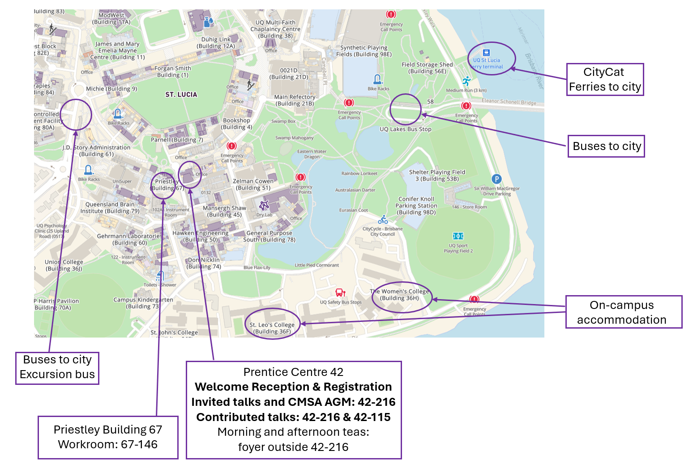

Programme
Programme
The full programme of the conference, including abstracts of invited and contributed talks, is available here.
A brief 1-page overfiew of the conference program is available here.
Contributed talks are 20 minutes long with an additional 5 minutes for questions. Talks will conclude after 25 minutes so that people can switch rooms.
Welcome Reception (4-6pm, Sunday 1 December)
A welcome reception with drinks and snacks will be held from 4-6pm on Sunday 1st December in the Prentice Centre (Building 42), just outside of room 216 (see map below).
CMSA Annual General Meeting
The Annual General Meeting for the Combinatorial Mathematics Society of Australasia (CMSA) will be held at 5pm on Tuesday 3rd December in Building 42-216 (see map below). Conference participants become members of the CMSA for 2025 and are encouraged to attend the AGM.
Excursion
Our excursion will be on Wednesday 4 December to Lone Pine Koala Sanctuary. The coach will leave UQ St. Lucia Campus, Chancellors Place at 11:00am and take us directly to Lone Pine. You may wish to bring your own lunch to the excursion, or lunch may be purhcased at one of the two cafes at Lone Pine. While out on the excursion, we highly recommend that you take the opportunity to feed the kangaroos and attend at least one of the shows on their Daily Schedule. The return journey coach will pick us up from Lone Pine at 5:00pm and return to UQ St. Lucia Campus, Chancellors Place.
Tickets for the excursion are optional (not included in your conference registration) and may be purchased at registration (approximately $60 per ticket, with a discounted option for eligible students).
Conference Dinner
Our conference dinner will be held on Thursday 5 December at The Transcontinental Hotel from 6-11pm on the upstairs level. When registering for the conference, please note down your dietary requirements.
One conference dinner ticket is included with the cost of your registration. If you would like to purchase additional tickets for the conference dinner, you can do so during the registration.
